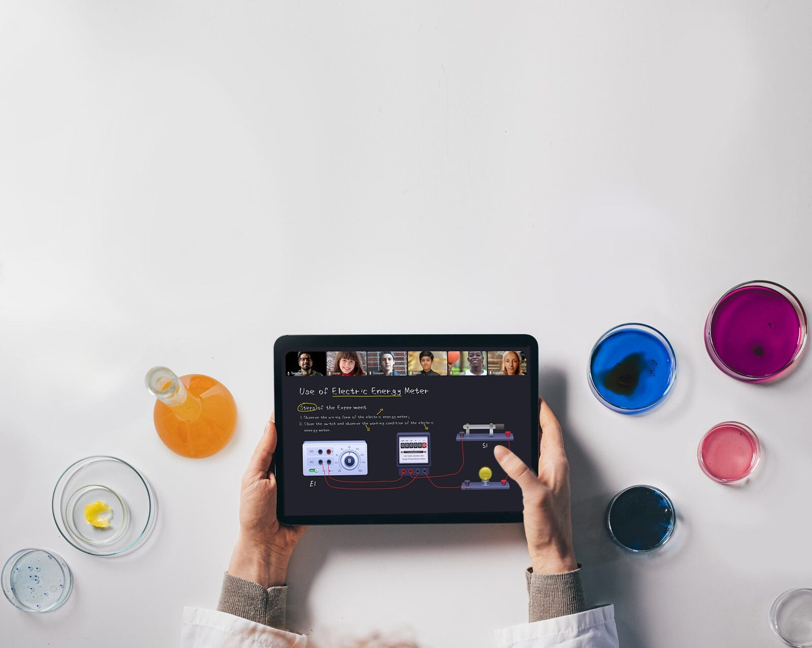

도구가 늘수록
손이 더
갑니다.
가림케이블흩어짐
빔 앞에 서면 가리고, 교실마다 노트북을 꽂고, 자료와 녹화는 강사님 컴퓨터마다 흩어집니다.


하드웨어
교실 장비가
한 몸.
- OPS 내장 윈도우 PC노트북 · HDMI 없이
- 4K 화면무선 미러링
- 추적 카메라T1 · S1
- 천장 마이크DT2 Pro

사실 60Hz(모델별), AG 방현·AF 지문방지. 가격은 상담에서.
지점도, 온라인 반도
같은
수업.
추적 카메라와 천장 마이크가 교실을 담고, 온라인 학생은 같은 칠판으로 들어옵니다.


이미 이렇게
시작했습니다.
강남 세정학원 · 부산 과사람학원 · 경기 정율사관학원 · 인천 동인천 종로엠, KASTLE · 대구 학문당, 손쌤에듀 · 청주 이미숙국어 · 대전 양영학원 · 제주 더솔루션


확인 고객사 이름·사진 사용 동의.